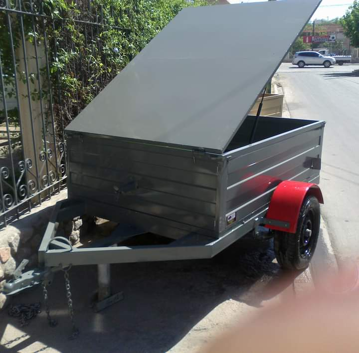
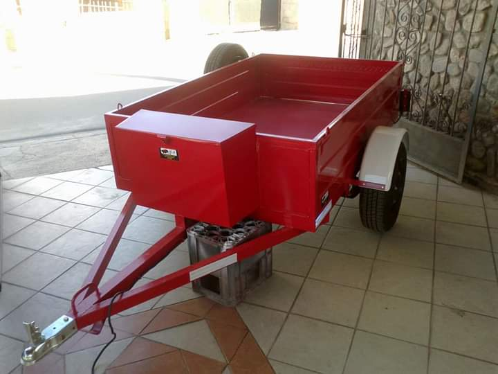
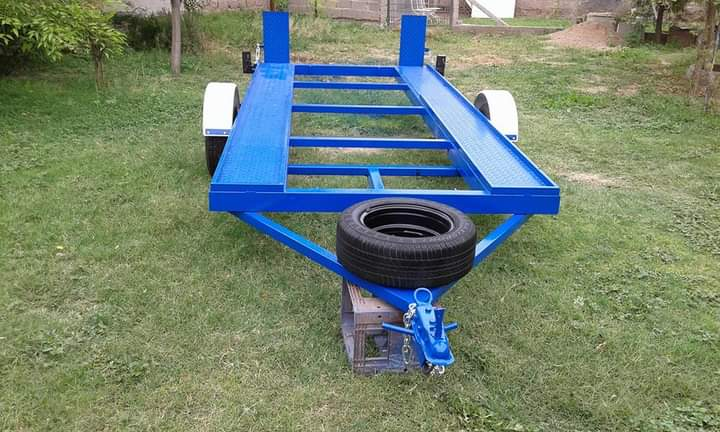

Bienvenidos a RM TRAILERS
En RM Trailers ofrecemos una amplia gama de trailers de alta calidad, diseñados para satisfacer tus necesidades de transporte. Ya sea para uso personal o comercial, tenemos la solución perfecta para ti.
TRAILERS
CARGA MAX CON TAPA
Su capacidad de carga pueden transportar desde cargas ligeras hasta extremadamente pesadas. La capacidad puede variar desde unas pocas toneladas hasta varias decenas de toneladas, dependiendo del tamaño y tipo de remolque. Dimensiones: El tamaño varía según el propósito del remolque. Los más comunes van desde 10 hasta 18 metros de largo, pero algunos tráileres pueden ser más largos. La altura estándar de los tráileres suele estar entre los 2.4 y 4 metros.
TRAILERS
IRON CLAD
Equipados con frenos de aire o eléctricos, que ayudan a detener la carga con seguridad. Muchos tráileres están equipados con sistemas de frenos automáticos, que activan los frenos del tráiler cuando el vehículo tractor reduce la velocidad.
TRAILERS
POWER LOAD
Sistema de enganche usado comúnmente en camiones pesados, que permite una mayor capacidad de maniobra y estabilidad. Enganche de bola, Utilizado en remolques más pequeños, donde se conecta una bola al vehículo tractor.